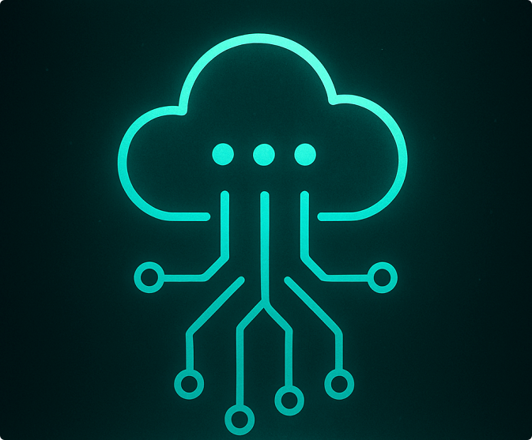

A Infraestrutura Digital da BIOCERR é a espinha dorsal invisível que conecta dados, processos e territórios de forma integrada e regenerativa. Ela vai além da tecnologia por si só — é um ecossistema de suporte técnico, ético e territorial, que permite à rede BIO operar com transparência, inteligência e corresponsabilidade.
Ao invés de plataformas centralizadas, utilizamos arquiteturas distribuídas, interoperáveis e de código aberto. Isso garante autonomia local, soberania dos dados e participação ativa das comunidades envolvidas. Cada nó da rede contribui e se beneficia, fortalecendo a resiliência coletiva.
A infraestrutura inclui módulos de rastreabilidade, gestão de indicadores regenerativos, acompanhamento em tempo real e integração com sistemas públicos e comunitários. Tudo é pensado para ser modular, adaptável e em constante evolução.
A inteligência artificial BIO atua como mediadora dessas interações digitais, traduzindo complexidade em clareza, sugerindo caminhos, alertando sobre desequilíbrios e apoiando decisões informadas com base nos princípios da regeneração.
Investir em infraestrutura digital é garantir que a regeneração aconteça com consistência, monitoramento e alinhamento entre pessoas, territórios e tecnologias. É o alicerce para um novo ciclo de cuidado planetário.

🧱 Blockchain
BIOBlock: BIOBlock é o módulo de contenção digital descentralizada da BIOCERR. Sua função é proteger os fluxos de informação e os dispositivos inteligentes, tanto dentro das MCEFPs quanto em seu entorno territorial. Inspirado nos princípios da soberania tecnológica e da transparência distribuída, o BIOBlock utiliza tecnologia blockchain para autenticar, registrar e proteger todas as interações digitais críticas, como:
- Abertura e fechamento de válvulas
- Envasamento e rastreabilidade de lotes
- Sincronização com sensores locais e remotos (IoT)
- Alertas de segurança e integridade da rede
Além de proteger os dados internos, o BIOBlock pode oferecer uma camada extra de segurança para ambientes inteligentes vizinhos, como apartamentos, hospitais ou comércios conectados à rede. Com isso, a MCEFP passa a operar não só como fábrica regenerativa, mas também como nó protetor de uma microzona digital, ampliando o impacto positivo da inovação.
Este módulo será opcional, configurável e compatível com legislações locais de privacidade e interoperabilidade.
📊 Big Data
Fluxo Vivo: O módulo de Big Data da BIOCERR transforma volumes massivos de informações em inteligência regenerativa. Ele coleta, organiza e interpreta dados provenientes de diversas fontes — desde sensores nas MCEFPs, até sistemas públicos, bases climáticas, indicadores comunitários e interações em tempo real com usuários.
Ao invés de priorizar o lucro ou a vigilância, a arquitetura de dados da BIOCERR é desenhada para cuidado, prevenção e corresponsabilidade. A inteligência artificial BIO atua como ponte interpretativa, revelando padrões invisíveis, antecipando riscos e propondo ajustes de rota com base na escuta dos territórios.
Os dados são tratados de forma descentralizada e ética, respeitando a soberania local e a privacidade dos envolvidos. Além disso, os indicadores utilizados não são apenas econômicos — eles incluem dimensões ambientais, sociais, afetivas e culturais, ampliando a noção de desempenho para além da lógica produtivista tradicional.
O Big Data da BIOCERR não é uma torre de controle, mas sim uma rede de escuta ampliada, que fortalece a autonomia de cada nó e alimenta decisões coletivas informadas, respeitando os ciclos e singularidades de cada ecossistema.
🌐 IoT
Rede BIO-IoT: Na BIOCERR, a Internet das Coisas (IoT) é muito mais do que conectar objetos — é uma forma de dar sensibilidade ao território. Cada MCEFP funciona como um organismo vivo, equipado com sensores e dispositivos que monitoram variáveis em tempo real: temperatura, fluxo de envase, uso de água, nível dos reservatórios, qualidade do ar, consumo de energia e até padrões de interação humana.
Esses dados permitem ajustes dinâmicos e preventivos, como redução de desperdícios, resposta rápida a falhas e melhorias na experiência do usuário. Mas mais do que isso, a IoT da BIOCERR está integrada à lógica da regeneração: ao invés de explorar, ela escuta, aprende e responde com cuidado.
Todos os dispositivos seguem princípios de segurança, interoperabilidade e soberania digital. Isso significa que cada comunidade pode personalizar seu ecossistema de sensores, garantindo controle sobre suas próprias infraestruturas e dados.
A rede IoT também atua de forma comunitária — ou seja, uma MCEFP pode ampliar a proteção digital de um território urbano ou rural ao seu redor, formando um campo de escuta compartilhada. A Internet das Coisas, nesse modelo, se torna uma Internet do Cuidado.
🧿 Gêmeos Digitais
Simuladores Regenerativos: Na BIOCERR, os Gêmeos Digitais não são apenas cópias virtuais de equipamentos ou processos — eles são espelhos vivos de territórios regenerativos. Cada MCEFP e Indústria Matriz pode ter sua versão digital que simula, antecipa e aprende com o comportamento real dos sistemas físicos.
Isso significa que conseguimos prever falhas, otimizar rotas, adaptar produções e até testar decisões complexas sem causar impacto real. É como se a própria fábrica pudesse sonhar antes de agir.
Os Gêmeos Digitais da BIOCERR também integram dados ambientais, sociais e operacionais em tempo real. Assim, conseguimos entender como as decisões locais afetam o entorno, a biodiversidade, os fluxos de logística e o bem-estar das comunidades.
Mais do que automação, os Gêmeos Digitais permitem governança antecipatória, ou seja, decisões baseadas em simulações, com participação humana e inteligência artificial trabalhando em conjunto para o bem coletivo.
Na visão BIOCERR, um Gêmeo Digital é uma memória sensível e projetiva da relação entre tecnologia, natureza e cuidado.
🛡️ Cibersegurança
Escudo BIO: A Cibersegurança na BIOCERR não é um escudo isolado, mas sim uma camada viva de proteção ética, regenerativa e coletiva. Em um ecossistema distribuído como o nosso, onde múltiplas MCEFPs, territórios e usuários se conectam, proteger os dados, os fluxos e as decisões é essencial para garantir confiança, soberania e continuidade.
Implementamos protocolos robustos de autenticação, criptografia e monitoramento, mas vamos além da técnica: promovemos a alfabetização digital comunitária, a transparência de algoritmos e o respeito ao consentimento em todas as interações com a IA BIO.
Nosso modelo propõe zonas seguras de interação digital, auditáveis e interoperáveis, integrando redes locais com padrões globais de proteção. Ao invés de blindar, buscamos envolver — criando uma cultura de corresponsabilidade cibernética que fortalece cada elo da rede.